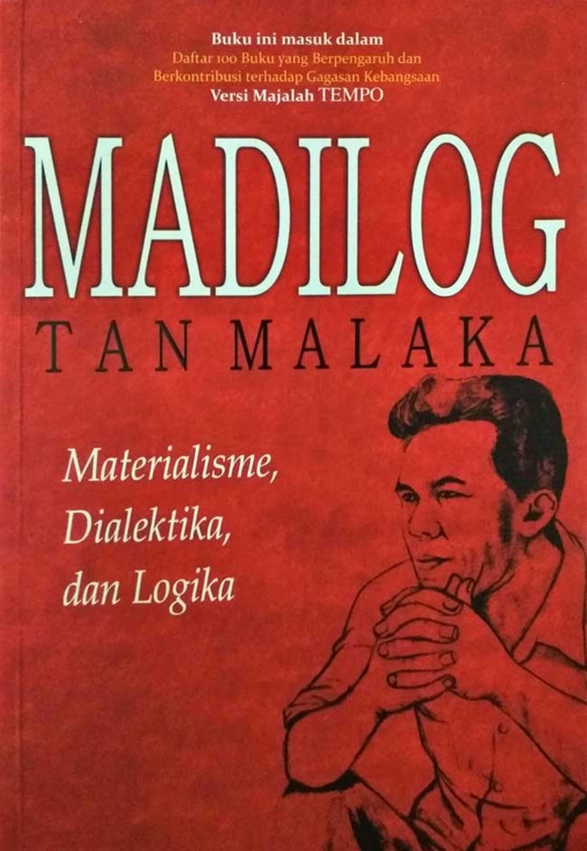

Who I'am?
Hello I'am Syaiful Islam! Here's a short "About Me" section written in English: About Me Writing has never been my favorite activity, but I aspire to develop a love for it. Despite not having a natural inclination towards writing, I recognize its importance in expressing ideas, sharing experiences, and connecting with others. I believe that with dedication and practice, I can cultivate a passion for writing and use it as a tool for personal growth and communication. Through my journey, I aim to explore different styles, topics, and perspectives to discover the joy and fulfillment that writing can bring.
What Books I Read.
-
Atomic Habbit

"Atomic Habits" is a book by James Clear that explores the transformative power of small habits. It breaks down the science behind habit formation and offers practical advice for building good habits and breaking bad ones. Clear emphasizes the idea of making tiny changes, or "atomic habits," that compound over time to create significant improvements. He explains the habit loop—cue, craving, response, reward—and shows how understanding and modifying this loop can lead to lasting behavior change. The book suggests focusing on systems rather than goals, creating an environment conducive to positive habits, and utilizing techniques like habit stacking and habit tracking to reinforce new behaviors. In essence, "Atomic Habits" provides simple yet effective strategies for making small changes that lead to big results in personal growth and development.
-
Madilog
"Madilog" is a philosophical work written by Tan Malaka, an Indonesian nationalist figure. The title "Madilog" is an abbreviation of "Materialisme Dialektika Logika" (Materialism Dialectics Logic). It combines Marxist dialectical materialism with Indian logical thought, aiming to provide a comprehensive worldview and guide for social transformation. In "Madilog," Tan Malaka explores the relationship between material conditions, social structures, and human consciousness. He discusses historical materialism, class struggle, and the role of ideology in shaping society. Additionally, he integrates elements of Indian philosophical thought, particularly Nyaya and Vaisheshika, to enrich Marxist analysis. Overall, "Madilog" offers a unique perspective on Marxist theory and philosophy, blending Western and Eastern thought to provide insights into social change and revolution.
-
Educated Terdidik

"Educated" is a memoir written by Tara Westover that chronicles her journey from growing up in a rural, fundamentalist family in Idaho to eventually earning a PhD from Cambridge University. The book explores themes of family, education, and self-discovery. Raised by strict and often abusive parents who didn't believe in formal education, Tara had to overcome numerous obstacles to pursue learning. Despite lacking formal schooling for much of her childhood, she taught herself enough to pass the ACT and gain admission to Brigham Young University. From there, she embarked on a remarkable educational journey, ultimately earning advanced degrees and gaining a deeper understanding of herself and the world around her. Throughout "Educated," Tara grapples with questions of identity and belonging as she navigates the tensions between her family's beliefs and her own aspirations. The memoir is a testament to the power of education to transform lives and break cycles of poverty and ignorance. Overall, "Educated" is a poignant and inspiring story of resilience, perseverance, and the pursuit of knowledge against all odds.
-
Filosofi Teras

"The Core Philosophy" or "Filosofi Teras" is a concept that emphasizes the importance of fundamental principles or core values in guiding one's actions and decisions. It suggests that by identifying and adhering to these foundational beliefs, individuals can lead more purposeful and meaningful lives. The core philosophy encourages self-reflection, introspection, and alignment with one's deepest values to achieve personal growth and fulfillment. It serves as a compass for navigating life's complexities and challenges, guiding individuals towards authenticity, integrity, and inner harmony.